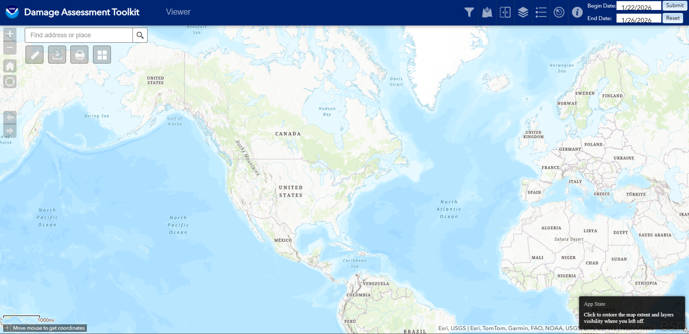
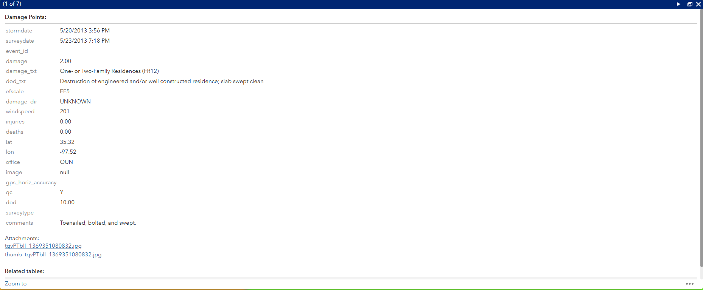

Table of Contents
- What is The Damage Assessment Toolkit (DAT)?
- How to Use The DAT
- How to Download Files
- Known Problems
- Damage Assessment Toolkit Site
What is The Damage Assessment Toolkit (DAT)?
The Damage Assessment Toolkit (shortened to DAT) is a portal to view surveys done by each NWS office. This site allows us to view the surveys, along with Damage Indicators (shortened to DI's). We can see damage paths, usually just a center line of the damage path, or if the office decides, polygons representing the whole width, sometimes including different polygons representing different levels of damage, shown in the image beside,along with specific DI's.
 In the Image to the left is the survey of the may 20th, 2013 Moore OK EF-5, done by NWS Norman. Here we can see a good example of what I was explaining earlier when talking about the polygons. We can see different polygons representing the different levels of damage (turquiose representing EF-0 damage and the purple representing EF-5 damage), along with each specific DI. In this case, this survey was well done, and each house impacted by the tornado has its own specific DI. We can also see the centerline path of the tornado aswell, which is usually estimated, or simply derived from the path width (taking the width and dividing it by 2).
In the Image to the left is the survey of the may 20th, 2013 Moore OK EF-5, done by NWS Norman. Here we can see a good example of what I was explaining earlier when talking about the polygons. We can see different polygons representing the different levels of damage (turquiose representing EF-0 damage and the purple representing EF-5 damage), along with each specific DI. In this case, this survey was well done, and each house impacted by the tornado has its own specific DI. We can also see the centerline path of the tornado aswell, which is usually estimated, or simply derived from the path width (taking the width and dividing it by 2).

When you first open up the DAT, it will probably look something like this, a map of the world with some funky lines in the states. These funky lines are just the boundaries where each office has juristiction over, which is helpful when a tornado goes across these boundaries (and when a survey goes from in-depth to like one damage path, happens more than you think!). At the top of the page, we can see some buttons. Starting on the right, we have the buttons for selecting the time period. This allows us to see data from between 2 different dates. Typically, I tend to view, at most, 1 year at a time, since there can be so much data to load that the browser either crashes, or your pc freezes if you select a large set of data. To the left of this, there are several different buttons, for learning about the page, showing radar data of the time, seeing legend and layer lists, adding data, and filters. On the left side of the page are a few tools, including a search box to look up towns, counties or cities, a download tool (we will get to that later), a measurement tool, and a print and gallery tools. All of these tools are pretty self-explainatory.

Anyways, lets continue to talk about DI's! They're where most of the information comes from. In the photo to the left, You can click on each DI to get more information, and using one of the buttons at the top, expand the panel. Here I clicked on one of the first two EF-5 DI's. It opens up a panel, showing some information about the DI, such as when the tornado happened, the day it was surveyed, some information about how it was rated (the Damage Indicator used, and the description of the indicator, in this case showing the EF scale description), the EF scale rating (EF-5 in this case) and the estimated windspeeds needed to cause this level of destruction, the officed that surveyed the DI, any comments or notes that the surveyor left (usually a description of the damage, or in some cases with ef-4 DI's, reasons why it wasn't rated EF-5), and any photos that the surveyors took to allow us to see the damage they saw.How to Use The DAT
How to Download Files
Known Problems